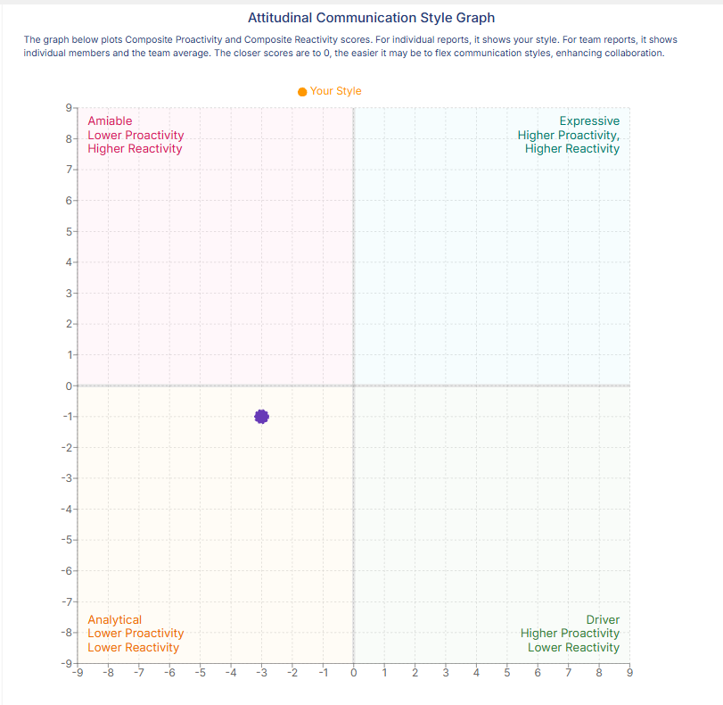
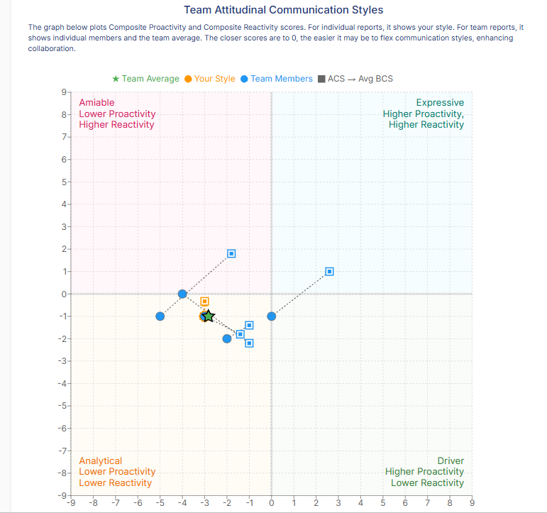
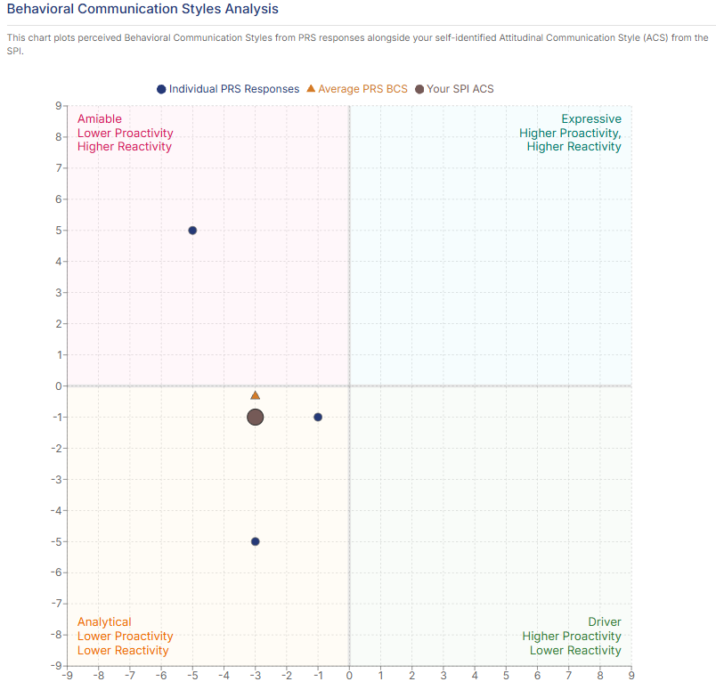
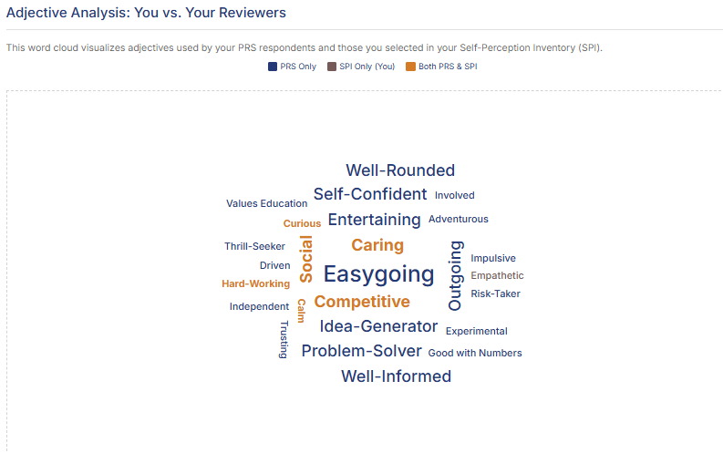
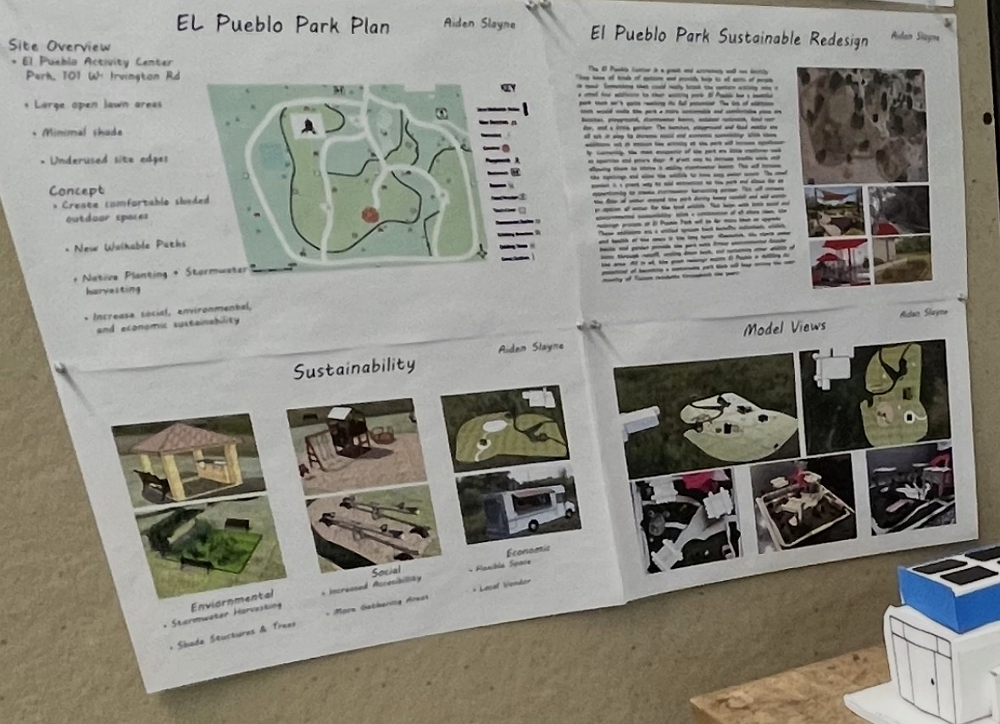
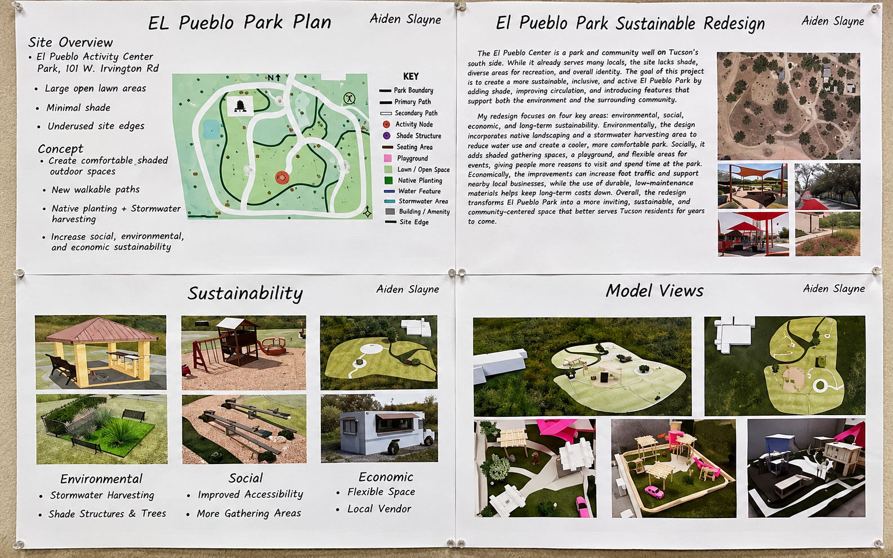

University of Arizona
Business Management major · Real Estate minor · Expected graduation May 2027
Hi, I'm Aiden. I'm a Business Management student with a minor in Real Estate, and I believe strong relationships are at the center of every great team and opportunity. Playing soccer my whole life helped shape that belief.
I'm building a career around communication, trust, and showing up for the people I work with.

I care about the work I do, but just as much about the people I do it with.
I'm studying Business Management at the University of Arizona's Eller College of Management, with a minor in Real Estate. My goal is to build a career where I can work with people, earn their trust, and keep learning.
I've played soccer for most of my life, and it has shaped how I think about commitment, accountability, and being part of something bigger than myself. Those same lessons have carried into my jobs, summer camp leadership, and the way I build relationships.
Whether I'm working with a team, helping a customer, or meeting someone new, I try to bring a positive attitude, communicate clearly, and follow through.

My professional headshot, as featured on my resume.
Experience that shaped meBusiness Management major · Real Estate minor · Expected graduation May 2027
As a lifeguard, I learned to stay calm under pressure, solve problems, and communicate clearly in difficult situations.
Led groups of 15–25 campers, coordinated activities, and worked with counselors and families to create a positive experience.
Worked across multiple restaurant roles and provided neighborhood services, building adaptability and people skills.
I made this video to share a little more about who I am, what I've learned at Eller, and why teamwork and meaningful relationships matter to me.
Watch on YouTube ↗A professional reputation is built through everyday interactions. At Eller, I've learned that being approachable and easy to work with is a strength — and that becoming a stronger professional also means speaking up, preparing well, and making my ideas heard.
I naturally try to build connections and help teams work together. I also want to be more confident about sharing my own perspective, even when the group is leaning in another direction.
Trust, communication, loyalty, and teamwork guide how I approach relationships. I want people to know they can count on me — both personally and professionally.
Feedback has helped me see that my easygoing attitude works best when I pair it with preparation, punctuality, and the confidence to share my ideas.
The qualities I want to be known for are not just words I would put on a resume. They come from experiences that have shaped how I treat people, take responsibility, and work toward a shared goal.
I believe trust comes from the small things: being consistent, being honest, and doing what you say you will do. I want people to feel comfortable relying on me.
Where I learned it: While doing gardening and general assistance for neighbors, I built recurring client relationships. That experience showed me that reliability is what brings people back, not just a good first impression.
I've always been most motivated when I'm working toward something with other people. To me, being a good teammate means contributing, communicating, and helping others succeed too.
Where I learned it: Playing soccer throughout my life taught me to depend on teammates and put the group ahead of individual recognition. At Red Lobster, working different positions showed me how much a team depends on everyone doing their part.
When people are counting on me, I take that seriously. Being dependable also means staying calm, making a decision when necessary, and taking ownership of the result.
Where I learned it: As a lifeguard, I handled medical incidents and difficult patron interactions. As a summer camp group lead, I supervised 15–25 campers, organized activities, and helped maintain a safe environment.
I value the ability to connect with different people, listen to what they need, and make them feel respected. I'm also learning that strong communication means sharing my own opinions instead of always going with the flow.
Where I learned it: Working with campers, parents, customers, and coworkers taught me to adapt how I communicate. Feedback from my Eller teammates helped me recognize that I should speak up sooner and be more prepared to defend my ideas.
I see myself as loyal, approachable, and someone who works well with others. Feedback from my Eller teammates has supported that side of my identity: they have described me as a mediator who builds good relationships and helps a team work through challenges.
But I have also heard that I can be too willing to go with the flow and that I need to improve my preparation and punctuality. That matters because the reputation I want in a future business or real estate career is not just “easy to work with.” I want to be someone who is trusted to contribute ideas, take initiative, and follow through.
My next steps: Before each team meeting, I'll prepare at least one specific idea; I'll contribute it early instead of waiting for someone to ask; and I'll plan to arrive ahead of time. I also want to keep asking teammates for feedback so I can see whether my actions are matching the professional image I'm trying to build.
These assessments help me compare my attitudes toward communication with the behaviors reflected in a separate profile. I don't want to be defined by one dot on a chart, but the results help me ask where I'm strong and where I can grow.

My self-perception result falls in the Analytical quadrant, around (−3, −1). I see myself as someone who listens first, thinks before speaking, and tries to understand the people around me. I developed that habit working with campers and parents, where listening carefully was just as important as giving directions.
In summer camp, I had to balance being approachable with keeping a group of 15–25 kids on schedule and safe. That experience taught me that listening matters, but so does being willing to step forward and make a decision. I want to bring more of that decisiveness into professional conversations.
Self-perception: Attitudinal Communication Style Profile · approximately (−3, −1).

This behavioral chart shows points across the Amiable and Analytical areas, with a central marker near (−3, −1). That makes sense to me: working as a lifeguard sometimes required calm, direct communication, while coaching and encouraging campers called for patience and warmth. These are examples of how I adapt, not claims about who submitted each plotted response.
For me, the lesson is to keep the approachable side of my personality while becoming more confident and direct when a team needs my input.
The graphic does not identify who provided each point, so I won't assign specific responses to classmates or survey participants without confirming the source.

My result lands in the chart's Charismatic Zone, with a warmth quotient of 6.36 and a confidence quotient of 2.27. I recognize that emphasis on connection from years of soccer, working with families at summer camp, and building repeat relationships with neighbors who trusted me with their yards and projects.
The lower confidence score gives me a useful goal: be as comfortable speaking up as I am getting to know people. I have practiced that through presentations and leading activities, and I want to keep improving.
The plotted position is approximate; this is my reflection on the assessment, not a clinical or fixed personality label.
In future team meetings, I'll come prepared with at least one idea or question, share it early, and ask for feedback afterward. I want my professional reputation to reflect both sides of me: someone people trust and someone who confidently contributes.
My Self-Perception Inventory gave me a clearer picture of the person I believe I am. I selected seven words that felt true to me, but the bigger lesson was seeing how those traits translate into the way I communicate, lead, and build relationships.
Those words reflect different sides of me. Being calm and caring matters when I'm responsible for campers or responding to situations as a lifeguard. Being competitive and hard-working comes from years of soccer and wanting to improve. Being social and curious helps me connect with people, whether I'm working with a customer or getting to know someone new.
Proactivity: −3.0 · Reactivity: −1.0
My natural style is Analytical. I tend to listen, think through options, and value accuracy before speaking. That's useful for making careful decisions, but it can also mean I wait too long to share an idea. My teammate feedback reinforced that I need to speak up sooner, not just listen well.
Preferred informal role: Relationships
I naturally pay attention to how people are getting along. That matches my experience on soccer teams and leading groups at summer camp. I want to keep building positive relationships while also holding myself and others accountable for the work.
Financial Interest · Business and investment motivation: 86/100
I'm motivated by opportunities to learn about business, earn financial stability, and build a successful career. That fits my interest in real estate and investment services. I also rated social interaction at 81/100 and helping others at 79/100, which reminds me that the people side of business matters just as much to me.
Direct communication and feedback
My individual preferences favor direct communication and straightforward feedback. I can work through different decision-making approaches, and I build trust through both shared work and personal connection. My team profile also highlighted direct communication and relationship-building as shared preferences.
My team also leaned Analytical overall, so it makes sense that we sometimes spent a lot of time discussing details. The team profile noted a strong Process orientation and no one selecting the Pragmatist role. For me, that was a reminder to do more than keep everyone comfortable: I need to help move conversations toward realistic decisions. My 360° feedback gave me a practical way to measure that growth across the semester.


Evidence: Self-Perception Inventory (SPI) and team SPI report, BCOM 314, Fall 2026. The seven adjectives are my own selections, not results from other people's Professional Reputation Surveys.
My Professional Reputation Survey gave me a more honest look at how I come across to other people. I described myself as empathetic, calm, curious, caring, competitive, social, and hard-working. My reviewers saw many of those same qualities, but also described me as easygoing, outgoing, entertaining, well-informed, self-confident, and an idea-generator. That surprised me because I sometimes underestimate the value of my own contributions.
My attitudinal style: Analytical (−3.0 proactivity, −1.0 reactivity). Average observed behavioral style: Analytical (−3.0 proactivity, −0.33 reactivity).
The results fall in the same quadrant, but reviewers perceive me as slightly more reactive and expressive than I perceive myself. That fits the feedback that I can be outgoing and confident with people, even though I tend to think carefully before sharing an opinion.
Respondents described me as someone who communicates well, connects with different people, brings positive energy, and has worthwhile ideas. This reinforces my Relationships team role and the trust I've built through soccer, customer-facing work, and leading summer camp groups.
Reviewers also encouraged me to recognize how much I can contribute, listen carefully to perspectives that differ from mine, and be mindful of how direct opinions may affect others. Those comments matter because confidence only helps a team when it's balanced with empathy and patience.
I'll bring a prepared idea to each team meeting, share it early, then invite someone else to respond before pushing my position. When I disagree, I'll ask a clarifying question first. I also want to manage my own expectations when plans change instead of letting frustration affect the people around me.


Source: my Professional Reputation Survey respondent summary and adjective comparison, Fall 2026. The AI-generated summary on the assessment platform is a secondary interpretation; the results and respondent comments are the evidence I am reflecting on.
My self-perception is only part of the story. All three rounds of my BCOM 314 teammate evaluations helped me see where my intentions matched my reputation—and where I needed to change my habits.
| Teammate rating | Round 1 | Round 2 | Round 3 | What I learned |
|---|---|---|---|---|
| On time and prepared | 3.0 | 3.0 | 3.6 | Better preparation was noticed. |
| Engagement in meetings | 3.6 | 3.6 | 3.2 | My participation still needs consistency. |
| Attentive listening | 3.8 | 3.6 | 3.4 | Listening matters, but I cannot stop at listening. |
| Quality deliverables | 3.6 | 3.4 | 3.6 | My work quality recovered after a Round 2 dip. |
| Respect for others' ideas | 4.0 | 4.0 | 3.8 | Respect is a consistent strength. |
| Holding teammates accountable | 3.6 | 3.0 | 3.2 | I need to rebuild the accountability I showed in Round 1. |
Ratings are teammate averages from the provided Round 1, Round 2 and Round 3 reports, on a 4-point scale. The positive-environment and quality scores use a 100-point scale. These are all three supplied rounds.
These comments made something clear: being approachable is not the same as contributing everything I can. I used to think that keeping things positive and going with the flow was enough. My teammates valued that, but they also wanted to hear more of my ideas. The improvement in punctuality showed me that changing a habit can actually change how others experience working with me.
Read my Round 1 feedback summary ↗ Read my Round 2 feedback summary ↗ Read my Round 3 feedback summary ↗
Earlier feedback pushed me to plan ahead for team meetings and presentations. By Round 3, my punctuality/preparation score had risen from 3.0 to 3.6. I want to keep using a short checklist before every meeting: review the agenda, finish my portion, and prepare one question.
During our Keurig communication-plan presentation, I suggested directly asking Mr. Delaney a question as part of our delivery. A teammate later recognized that creative choice. It reminded me that I have useful ideas and should contribute them sooner rather than waiting for permission.
I practiced presenting with a more engaging tone and stronger audience connection. Round 3 feedback recognized a moment when the audience responded well to my enthusiasm, while also encouraging me to maintain that energy throughout and improve my posture when teammates speak.
My identity: In my SPI I selected empathetic, calm, curious, caring, competitive, social, and hard-working. I see myself as loyal, easygoing, and relationship-focused. My attitudinal communication profile also suggests I naturally think and listen before jumping in. My reputation: PRS reviewers described me as easygoing, outgoing, entertaining, well-informed, and self-confident, and saw me as Analytical on average (−3.0, −0.33). Teammates also described me as positive and supportive, while encouraging me to contribute ideas more consistently and prepare more thoroughly. My ideal professional persona: I want to keep the approachable side of my personality while becoming the teammate or client-facing professional who comes prepared, makes decisions, and contributes confidently.
That balance matters for my future in real estate or investment services. Building a relationship might open a door, but preparation, judgment, and follow-through are what keep a client's trust. My goal is to contribute at least one thoughtful idea in every meeting, prepare my work ahead of deadlines, and ask for feedback after major presentations so I can keep measuring the difference between how I intend to show up and how others experience me.
A lot of what I've learned about leadership came from outside the classroom: working with kids, keeping people safe, helping neighbors, and being part of a team.
As a group lead at OV Community Recreation Center, I supervised 15–25 campers ages 6–14. I planned games, coordinated schedules, mentored junior counselors, and worked with parents and camp leadership. I learned that being a leader means making people feel included while taking responsibility for the group.
What I gained: Leadership, patience, planning, communication.
At the recreation center, I handled medical incidents and challenging patron interactions while helping keep the pool safe and welcoming. It taught me to pay attention, make decisions under pressure, and communicate clearly when people are counting on me.
What I gained: Responsibility, conflict resolution, judgment.
I built recurring neighborhood clients by offering gardening and general assistance. This taught me something simple that I carry into every professional relationship: show up, listen, and follow through on what you promise.
What I gained: Initiative, customer relationships, reliability.
I worked as a host, cook, busser, and dishwasher. Seeing the restaurant from different positions helped me appreciate the people behind every good guest experience and learn how to adapt when things get busy.
What I gained: Adaptability, teamwork, customer service.
 Lifelong passion
Lifelong passionI've played soccer for as long as I can remember, and it's a big part of who I am. Over the years, the sport has taught me how to trust teammates, communicate under pressure, bounce back after setbacks, and celebrate wins together. I've learned that being a good teammate isn't about being the loudest person on the field — it's about showing up, doing your part, and supporting the people around you. I’m grateful for the people I’ve met through the sport. The friends I’m surrounded by are genuinely good people who motivate me, keep me grounded, and make the experience about more than just winning. I bring that same attitude into my jobs, friendships, and professional life.
What I gained: Teamwork, commitment, perseverance.
 Outside the classroom · Boating
Outside the classroom · BoatingBoating is something I've always enjoyed. I've been fortunate to experience some incredible, high-performance boats and meet successful, down-to-earth people along the way. What stands out to me isn't just the speed or the boats themselves; it's getting to hear people's stories and see how much you can learn by being curious and building genuine connections. Those conversations remind me why relationships matter so much in the career I want to build.
 Outside the classroom · Hiking
Outside the classroom · HikingI've always loved getting outside and hiking, especially around Arizona. It's a chance to clear my head, appreciate where I live, and challenge myself in a different way. Hiking reminds me to stay patient, keep moving forward, and enjoy the process instead of only focusing on the destination.
A selection of academic projects, individual digital work, and real-world leadership reflections. Each example explains what I worked on, the skills involved, and why it matters to my professional development.



This graphic is a reconstructed visual for easier viewing. Some wording and imagery may differ from my original board; the original photos above are the authentic project evidence.

Project context: For a real estate class, I studied El Pueblo Park at the El Pueblo Activity Center in Tucson, near 101 W. Irvington Road. My site assessment identified large open lawn areas, limited shade, and underused edges. I wanted to redesign the space to be more comfortable, active, and welcoming for the community.
My individual contribution: I created the site plan, explored design options, built a physical model, and prepared presentation boards explaining the redesign. My concept added new walkable paths, shaded outdoor spaces, native planting, and areas where people could gather and spend time together.
Environmental sustainability: I proposed native landscaping, additional trees and shade structures, and stormwater harvesting to help conserve water and make the park more comfortable in Tucson’s climate.
Social and economic sustainability: The redesign also emphasized accessibility, gathering spaces, flexible recreational areas, and room for local vendors. I considered how a public space can support the surrounding community while remaining practical to maintain.
Skills demonstrated: Site analysis, sustainable planning, design thinking, model building, visual communication, and presenting a proposal that balances community needs with long-term value.
Why I selected this project: This is one of the best examples of how my real estate education connects to the real world. It taught me to look beyond how a property appears and think about how people use it, how it affects its surroundings, and how thoughtful improvements can create lasting value.
Original project evidence: my presentation board, exhibition display, and physical model. The optional enhanced reconstruction is separately labeled.
Context: I wanted to introduce myself to future employers and professional contacts.
My contribution: I planned and assembled my story using on-camera speaking, photos, and footage from my school and personal experiences.
Skills demonstrated: Public speaking, digital storytelling, communication, and personal branding.
Why I chose it: It brings together my experiences and the relationships that shape how I approach work.
Context: I led groups of 15–25 campers ages 6–14 at OV Community Recreation Center.
My contribution: I coordinated activities and schedules, supported junior counselors, and communicated with parents and camp leadership.
Skills demonstrated: Leadership, planning, patience, and adaptability.
Why I chose it: It shows how I learned to balance listening to people with taking responsibility for a group.
Context: I worked as a lifeguard, where safety and clear communication were daily priorities.
My contribution: I monitored pool activity, handled medical incidents and difficult patron interactions, and followed safety procedures.
Skills demonstrated: Judgment, responsibility, composure, and conflict resolution.
Why I chose it: It reflects the kind of dependable professional I want to be when clients or teammates face unexpected challenges.
Context: Our BCOM 314 team examined how customer complaints and product reliability could affect Keurig Dr Pepper's business relationships.
My contribution: I developed and presented material on retail, coffee, and brand partners, explaining why customer trust also matters to the companies working with Keurig.
Skills demonstrated: Stakeholder analysis, business communication, research, and presentation design.
Why I chose it: It shows how I connect a business problem to the people and partnerships affected by it. These are two slides from a larger team presentation, not the entire group project.
From leading summer campers and lifeguarding to restaurant work and helping neighbors, I’ve learned that trust is built through consistency, communication, and a willingness to help.
Updated to reflect my Business Management major and Real Estate minor.
Read my resume below, or download a copy using the buttons above.
Whether you want to talk about business, real estate, or a potential opportunity, I'd be happy to connect. Relationships are important to me, and I'm always open to meeting new people.
Based in Tucson, Arizona · University of Arizona